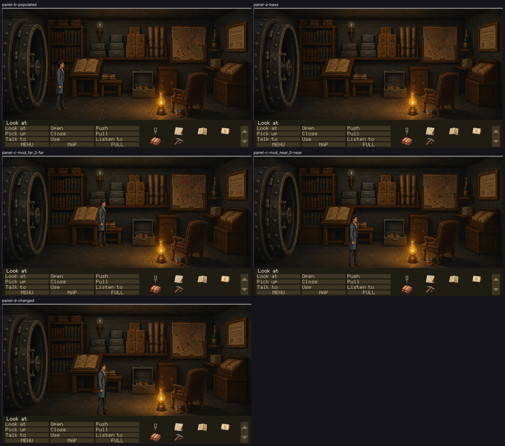

Every frame below is the full play area as the renderer drew it, in the running
game, at 40b7da7a on ccr-347d40c6-71r9f9.
No crop, isolated sprite or source image appears here: those are for diagnosing what a full
frame has already shown.
These panels establish technical admissibility only. Nothing here says the
art is good, in style, funny or approved. Only Tyler sets visual_accepted.

THE COMMITTED SHEETEvery panel, complete, at
50% —
downscaled, never cropped. The full-resolution captures are reproducible test artifacts
and are not in git; their hashes are below.
PASS — technically admissible
PANEL B — normal populated stateroom company_vault · camera 0 ·
flags T_OPENING_SAID T_COACH_DEPARTED T_UNDERTAKER_NAMED T_HOB_CROSSING T_THAD_LEAVING T_HOB_SPOKEN T_HOB_GONE T_PIKE_DEAD T_OPENING_DONE T_SEEN_MAIN_STREET T_SWINDLED T_CASE_DOWN T_CASE_TAKEN T_BORDERS_MOTT T_ASSAY_QUEUE T_HOB_HANDWRITING T_SURVEY_NEEDED T_DEED_LODGED T_SURVEY_LODGED T_NINETY_DAYS T_NEED_TO_DIE T_EXECUTOR_RULE T_EXECUTOR_NAMED T_SAME_HAND T_DECEASED T_DINED T_EXCAVATION_CLAUSE T_PICKAXE_ON_ACCOUNT T_HOB_IS_MOTT T_NO_GOLD_EVER T_WARM_HOLE T_PRATT_STAKE T_PRATT_JUMP_SEEN ·
inventory tuning_fork deed company_map invitation blanket pickaxethad @460,790 386px spritePANEL A — base state, cast suppressedroom company_vault · camera 0 ·
flags T_OPENING_SAID T_COACH_DEPARTED T_UNDERTAKER_NAMED T_HOB_CROSSING T_THAD_LEAVING T_HOB_SPOKEN T_HOB_GONE T_PIKE_DEAD T_OPENING_DONE T_SEEN_MAIN_STREET T_SWINDLED T_CASE_DOWN T_CASE_TAKEN T_BORDERS_MOTT T_ASSAY_QUEUE T_HOB_HANDWRITING T_SURVEY_NEEDED T_DEED_LODGED T_SURVEY_LODGED T_NINETY_DAYS T_NEED_TO_DIE T_EXECUTOR_RULE T_EXECUTOR_NAMED T_SAME_HAND T_DECEASED T_DINED T_EXCAVATION_CLAUSE T_PICKAXE_ON_ACCOUNT T_HOB_IS_MOTT T_NO_GOLD_EVER T_WARM_HOLE T_PRATT_STAKE T_PRATT_JUMP_SEEN ·
inventory tuning_fork deed company_map invitation blanket pickaxethad @460,790 386px spritePANEL D — principal changed state: No state changes in the vault (doc 02 sites no puzzle here). The change is the room's act gate: set back before the confession (ACT 3, T_HOB_IS_MOTT false) by the flag control, the way in from Fanshawe's office is shut; this proves the gate, not a picture.room company_vault · camera 0 ·
flags T_OPENING_SAID T_COACH_DEPARTED T_UNDERTAKER_NAMED T_HOB_CROSSING T_THAD_LEAVING T_HOB_SPOKEN T_HOB_GONE T_PIKE_DEAD T_OPENING_DONE T_SEEN_MAIN_STREET T_SWINDLED T_CASE_DOWN T_CASE_TAKEN T_BORDERS_MOTT T_ASSAY_QUEUE T_HOB_HANDWRITING T_SURVEY_NEEDED T_DEED_LODGED T_SURVEY_LODGED T_NINETY_DAYS T_NEED_TO_DIE T_EXECUTOR_RULE T_EXECUTOR_NAMED T_SAME_HAND T_DECEASED T_DINED T_EXCAVATION_CLAUSE T_PICKAXE_ON_ACCOUNT T_NO_GOLD_EVER T_WARM_HOLE T_PRATT_STAKE T_PRATT_JUMP_SEEN ·
inventory tuning_fork deed company_map invitation blanket pickaxethad @780,857 404px spritePANEL C — mud_far_0 far, authored y701expected 363px · runtime 363px ·
silhouette 363px, bottom y700art/actors/thad-idle-right/idle-03.pngPANEL C — mud_near_0 near, authored y857expected 404px · runtime 404px ·
silhouette 404px, bottom y856art/actors/thad-idle-right/idle-01.png